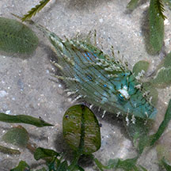
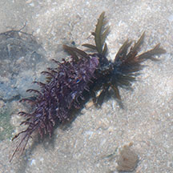
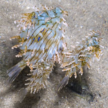
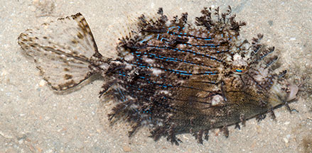
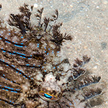

|
|
| fishes text index | photo index |
| Phylum Chordata > Subphylum Vertebrate > fishes > Family Monacanthidae |
| Feathery
filefish Chaetodermis penicilligerus Family Monacanthidae updated Sep 2020 Where seen? This amazing 'fluffy' fish is sometimes seen on some of our shores, near seagrasses and coral rubble. It may be quite common but just overlooked due its superb camouflage. Sometimes a few small ones may school together, the group resembling flotsam. It was previously called Chaetodoerma penicilligera. It is sometimes also called the prickly, tasselled or leafy filefish. Features: To about 31cm, those seen about 8-10cm. Smaller ones 2-3cm sometimes seen among seagrasses. Body more disk-shaped (circular). Distinguished by thick feathery tassel-like extensions all over the body including the dorsal spine. Dark stripes along the sides of the body, sometimes with short bright blue lines. Seen in a wide variety of colours from shades of green, blue, purple and brown. Tail fin large, triangular and mostly transparent. |
 Only a little bigger than a seagrass leaf. Changi, May 05 |
 Looks just like seaweed. Pulau Sekudu, Aug 06 |
 Three fishes together resembling flotsam. Tanah Merah, Sep 11 |
 Tanah Merah, Sep 09 |
 Tassels even on its dorsal spine. |
| Human uses: It is considered good eating in some places although it is not known to be marketed. |
| Feathery filefishes on Singapore shores |
On wildsingapore
flickr
|
| Other sightings on Singapore shores |
Links
References
|